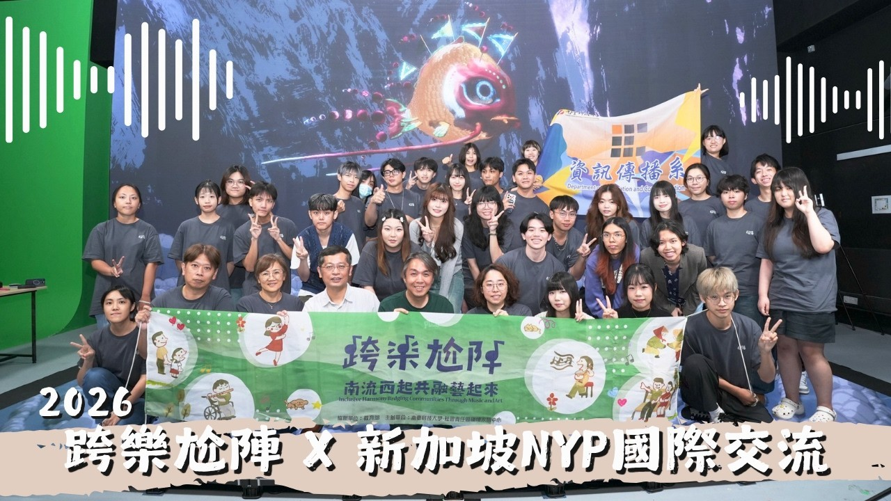

在 YouTube 播放 ↗ Watch on YouTube ↗最新影像｜新加坡交流 New film · Singapore exchange
從西港唱到新加坡！ From Sigang to Singapore!
鏡頭下的跨國交流共創 Vlog 紀錄片。跟著跨樂尬陣的影像紀錄，看見地方文化如何成為跨國交流的共同語言。 A vlog documentary of cross-border co-creation. Follow Inclusive Harmony in Sigang as local culture becomes a shared language for international exchange.
在 YouTube 觀看完整影片 ↗ Watch the full film on YouTube ↗